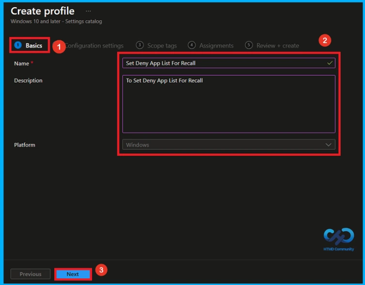
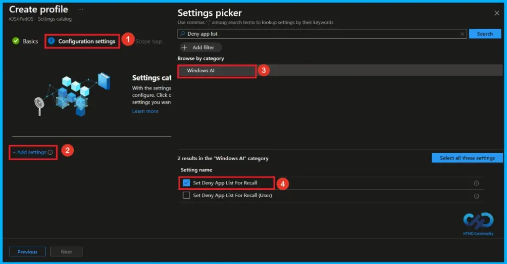
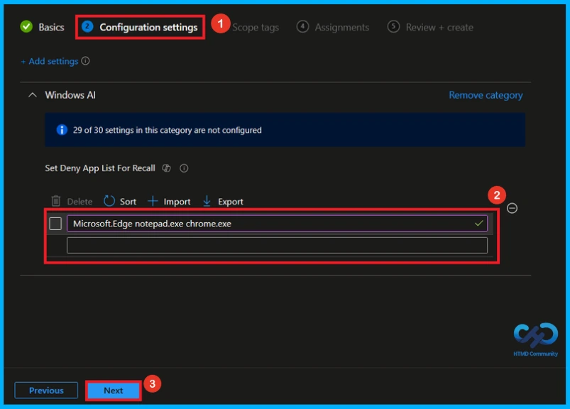
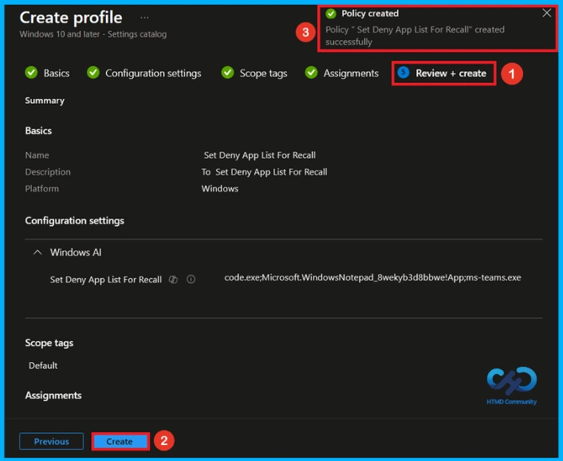
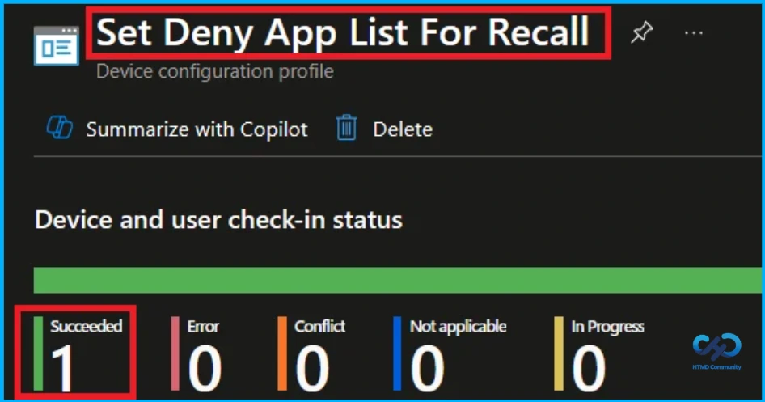
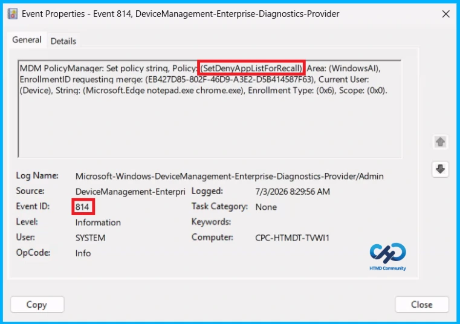
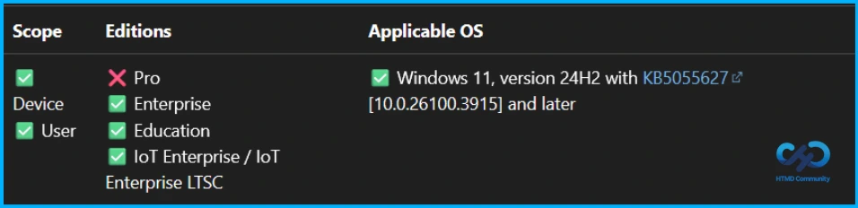
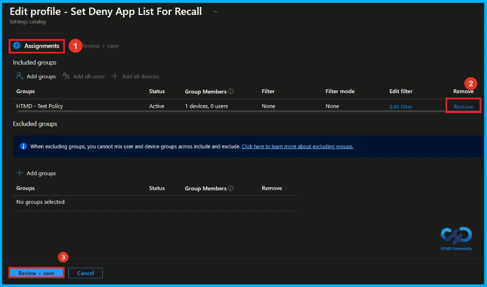
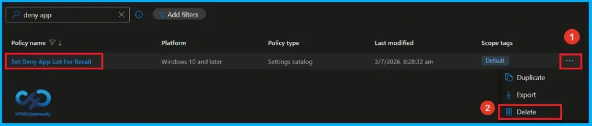

Key Takeaways
- Stops Recall from capturing selected apps.
- Apps can be identified by AUMID or .exe file name.
- Users can add exclusions, but admin rules always come first.
- Helps protect sensitive data and improve privacy.
Hey, let’s discuss about how to Protect Sensitive Apps from Windows Recall using Intune. This policy lets administrators specify which applications should be excluded from Recall snapshots. Apps can be identified using either their Application User Model ID (AUMID) or the executable file name, making it easy to match different types of applications.
Table of Contents
Protect Sensitive Apps from Windows Recall using Intune
Users can also choose to exclude additional apps through the Recall settings. However, any exclusions defined by the organization take priority over user preferences. This approach helps organizations meet privacy and compliance requirements while still giving users the flexibility to manage their own Recall experience.
How to Create a Policy
To configure this policy, first sign in to the Microsoft Intune Admin Center. Once you are signed in, navigate to Devices, then open the Configuration section. Click Create, and from the available options, select New policy to start creating and configuring the policy.
Select Platform and Profile Type
The next step in the policy creation process is to create a profile by selecting the appropriate platform and profile type. Select Windows 10 and later as the platform and Settings catalog as the profile type. After making these selections, click Create to proceed.
Name and Description
To begin configuring a policy in Intune, start with the Basics step. Here, we can add the name as Set Deny App List For Recall and give a brief description(To Set Deny App List For Recall). The platform already set as Windows. Click Next to proceed.

Configure Deny App List for Recall Policy
On the Configuration settings tab, click Add settings to open the Settings picker. The Settings picker displays a wide range of available policy settings. Here, i select the category as Windows AI and select the policy Set Deny App List For Recall.

Adding Applications to the Deny List
After closing the Settings picker, the selected setting appears on the Configuration settings page. Here, you can add the apps you want to block by entering their executable names, such as msedge.exe, notepad.exe, or chrome.exe, and then click Next to continue.

A Scope Tag in Intune is used to control the visibility and access of Intune resources based on administrative roles. Scope tags are optional. You can add a scope tag by clicking the Select scope tags button. Click Next to continue.
Assignments Tab to Add Group
On the Assignments tab, you can choose which users or devices will receive this policy. Under Include groups, click Add groups, then select the required group from the list (for example, HTMD – Test Policy). Click Next to continue.
Final Step of Deny App List for Recall Policy
At the final Review + Create step, you can see a summary of all the configured settings for the new profile. Review the details carefully and make any required changes by clicking Previous. Once everything is confirmed, click Create to complete the process. A notification will appear confirming that the Set Deny App List For Recall created successfully.

Device and User Check-in Status
We can check a policy’s status in the Intune Portal. Generally, it takes about 8 hours for policies to be created. Use the manual sync option to reduce the configuration delay in the Company Portal app on the device, then check the status again. Navigate to Devices> Configuration. Click on the Set Deny App List For Recall policy to see its details.

Client Side Verification
To confirm if a policy has been applied, use the Event Viewer on the client device. Go to Applications and Services Logs > Microsoft > Windows > Device Management > Enterprise Diagnostic Provider > Admin. Use the Filter Current Log option and search for Intune event 814.
MDM PolicyManager: Set policy strinq, Policy: (SetDenyAppListForRecall) Area: (WindowsAI),
EnrollmentID requesting merqe: (EB427D85-802F-46D9-A3E2-D5B414587F63), Current User:
(Device), String: (Microsoft.Edge notepad.exe chrome.exe), Enrollment Type: (0x6), Scope: (0x0).

Windows Configuration Service Provider (CSP)
The policy Configuration Service Provider (CSP) is a tool for businesses to manage settings on Windows 10 and 11 devices. It details each policy’s function (Description Framework Properties) and how it relates to older Group Policy settings (Group Policy Mapping details).
Description Framework Properties
- Format – Int
- Access Type – Add, Delete, Get, Replace
- Default Value – List (Delimiter:
;)
Group Policy Mapping details
| Name | Value |
|---|---|
| Name | SetDenyAppListForRecall |
| Friendly Name | Set a list of apps to be filtered from snapshots for Recall |
| Location | Computer and User Configuration |
| Path | Windows Components > Windows AI |
| Registry Key Name | SOFTWARE\Policies\Microsoft\Windows\WindowsAI |
| Registry Value Name | SetDenyAppListForRecall |
| ADMX File Name | WindowsCopilot.admx |

How to Remove Assigned Group from this Policy
Sometimes, we need to remove a group from a policy assignment for security updates. Open the policy from the Configuration tab and click on the Edit button on the Assignment tab. Click on the Remove button on this section to remove the policy. Click Review + Save after making the change.
For detailed information, you can refer to our previous post – Learn How to Delete or Remove App Assignment from Intune using by Step-by-Step Guide.

How to Delete Deny App List for Recall Policy from Intune
To delete an Intune policy for security or operational reasons. It is simple to do. I will demonstrate how to delete an Intune policy through the Deny App List For Recall Policy. Click the three dots, then click the Delete option.
For detailed information, you can refer to our previous post – How to Delete Allow Clipboard History Policy in Intune Step by Step Guide.

Need Further Assistance or Have Technical Questions?
Join the LinkedIn Page and Telegram group to get the latest step-by-step guides and news updates. Join our Meetup Page to participate in User group meetings. Also, join the WhatsApp Community and the Whatsapp channel to get the latest news on Microsoft Technologies. We are there on Reddit as well.
Author
Anoop C Nair has been Microsoft MVP from 2015 onwards for 10 consecutive years! He is a Workplace Solution Architect with more than 22+ years of experience in Workplace technologies. He is also a Blogger, Speaker, and Local User Group Community leader. His primary focus is on Device Management technologies like SCCM and Intune. He writes about technologies like Intune, SCCM, Windows, Cloud PC, Windows, Entra, Microsoft Security, Career, etc.